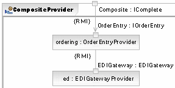
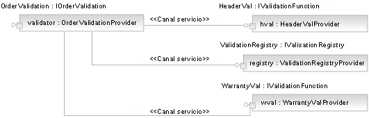
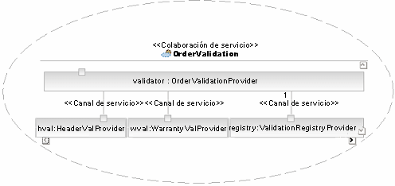
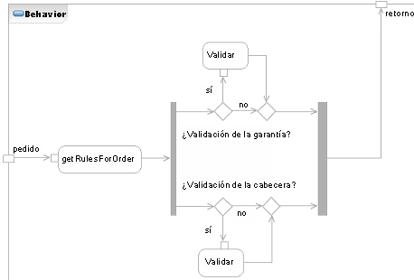
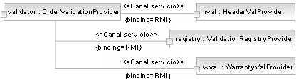

| Concepto: Composición de servicio y coreografía |
 |
|
| Elementos relacionados |
|---|
IntroducciónUn aspecto clave de la arquitectura orientada a servicios (SOA) es que los servicios se pueden componer, es decir, que un nuevo servicio a menudo se compone como una colaboración entre un conjunto de servicios existentes. En muchos sentidos, es cierto con técnicas existentes orientadas a objetos y basadas en componentes, salvo que determinadas funciones del middleware utilizadas para desarrollar soluciones orientadas a servicios permiten la ejecución directa de estas colaboraciones a través de estándares como el Lenguaje de ejecución de procesos empresariales para servicios web (BPEL4WS, WS-BPEL o simplemente BPEL). Esta capacidad de componer servicios estructuralmente, es decir, de definir el uso de dependencias entre servicios, y también de componer servicios comportamentalmente es la que hace que una arquitectura basada en servicios y una estrategia de TI resulten atractivas para tantas organizaciones. Cada vez más organizaciones se dan cuenta de la necesidad de mayor agilidad en su capacidad de respuesta a los entornos empresariales cambiantes, ya sea por la presión de la globalización, los nuevos mercados o canales o simplemente los nuevos competidores que utilizan tecnología de manera más eficaz. Estas organizaciones observan el desarrollo orientado a servicios y las soluciones orientadas a servicios como una forma de organizar sus activos de TI para solucionar requisitos actuales y proporcionar una infraestructura de funciones alineadas de empresa que se puedan volver a utilizar, reconfigurar y recombinar de forma eficaz para cumplir con futuros requisitos. Otro aspecto de la capacidad para componer servicios de esta forma es que proporciona un modo flexible de incorporar los activos de TI existentes a nuevas soluciones de la misma forma que los activos más nuevos. Por ejemplo, los activos existentes, incluso aquellos desarrollados para plataformas de sistema principal y similares, se pueden exponer como servicios con algunos productos de middleware e integrar de la misma forma que los nuevos servicios desarrollados con J2EE, IBM WebSphere o Microsoft .NET. Desafortunadamente, la mayoría de los activos existentes no tienden a desarrollarse con interfaces que cumplan muchas de las directrices que utilizamos para nuevos servicios. Por eso resulta útil crear servicios compuestos que no sólo cubran los servicios existentes sino que, en su lugar, ofrezcan interfaces diferentes, más alineadas con la empresa, que aprovechen al máximo las funciones existentes agregándolas y coreografiándolas para ofrecer un nivel más alto de capacidad. Coreografía de serviciosObservemos brevemente el término coreografía. Se trata del término utilizado en muchos productos de middleware para señalar la ejecución gestionada de algún script que indique un flujo de proceso en el que los participantes sean servicios y las tareas sean intercambios de mensaje. En muchos productos, se utiliza el término orquestación. Aunque algunos analistas y tecnologistas del sector describen diferencias en el significado de las palabras y en el uso de estos términos en estándares, para la mayoría de los usuarios las diferencias son mucho menos interesantes que sus parecidos. En términos de estándares, una forma común de representar la coreografía de los servicios web llegó tarde, después de que la mayoría de los distribuidores líderes de middleware introdujesen soluciones de propietario. El estándar del sector actual es el Lenguaje de ejecución de procesos empresariales para servicios web (BPEL4WS o BPEL). Para obtener más información sobre BPEL4WS, consulte el sitio de OASIS WSBPEL o el sitio de IBM BPEL. Servicios como estructuras compuestasLos servicios pueden fácilmente desarrollarse con las funciones suministradas por otros servicios de manera recurrente, tal como se muestra en el siguiente diagrama, donde los servicios pueden identificar otros servicios de los que dependen. En este caso, un servicio compuesto utiliza los servicios de pasarela de Intercambio de datos electrónicos (EDI) y la entrada de pedido. A menudo se utilizan servicios compuestos allí donde los factores habituales de funciones de servicios identifican funciones comunes que pueden ser suministradas en más de una circunstancia. Para algunos servicios en los que el rol proporciona más funciones de infraestructura (caso del servicio EDI de abajo), esto resulta relativamente fácil de identificar. En otros casos, las colaboraciones de servicio detalladas identificarán la necesidad de partir un servicio candidato en más de un servicio real.  Un uso importante de los servicios compuestos es el suministro de funciones ejecutadas por activos existentes (de herencia). En la mayoría de los casos, se accederá a tales funciones a través de conectores o API suministrados por el propio activo y se desarrollará un nuevo servicio que dependa de estos activos para alguna lógica. Por otro lado, para permitir que el componente agregado evoluciones más flexiblemente y que el activo existente se intercambie en el futuro para una implementación diferente, se puede utilizar una estrategia alternativa. En este caso, cada función existente se expone como servicio independiente y estos servicios son posteriormente utilizados por el servicio compuesto, lo que permite que el activo existente y los servicios compuestos evoluciones de forma independiente. Otro uso de los servicios compuestos es en casos en los que el conjunto de servicios reales aprovechados por un servicio compuesto no se conozca de antemano. Por ejemplo, en caso de otro servicio de gestión de pedidos, podríamos identificar la necesidad de separar la validación de pedidos como conjunto de servicios de reglas empresariales independientes de forma que las nuevas reglas se puedan añadir posteriormente. Esto está relacionado con el tema de mediación de servicio (consulte el apartado Directriz: Mediación de servicio). Obviamente, dicho enfoque tiene beneficios pero también inconvenientes. Si el servicio de nivel inferior sólo se puede exponer a través de protocolos de Internet como SOAP/HTTP, es probable que sea menos fiable y tenga un rendimiento más bajo que si se accede a él a través de un conector o de una API nativa. Estos equilibrios tienen que ser parte del conjunto general de decisiones arquitectónicas realizadas y documentadas como parte de cualquier diseño de servicio. Para obtener más información sobre acceso de activos existentes y sobre la relación entre servicios candidatos y servicios reales, consulte el apartado Actividad: Análisis de activos existentes. Colaboraciones de servicioEn el modelado del comportamiento de servicios compuestos utilizamos la noción de un Artefacto: Contrato de servicio durante las fases de identificación y diseño.
De esta forma, podemos ver que una colaboración de servicio en la tarea de diseño de servicio está directamente relacionada con la noción de coreografía desde el punto de vista de los servicios web. Representa una descripción de flujo configurable y externalizado que secuencia un conjunto de intercambios de mensaje entre servicios. En la mayoría del middleware que implementa coreografía, el flujo se describe en un lenguaje XML como BPEL. Dicho lenguaje podría generarse desde la colaboración de servicio descrita en el Artefacto: Modelo de servicio cuando el propio flujo se describe con Actividades o interacciones de UML 2.0. La colaboración consta de una estructura compuesta que proporciona la vista de los colaboradores y sus conexiones, así como un comportamiento que indica los mensajes intercambiados y su secuenciación. El diagrama anterior que muestra un proveedor compuesto muestra una estructura compuesta, como lo hace la imagen de Validación de pedidos siguiente.  Ésta no es la estructura del propio proveedor de validación sino la estructura de la colaboración de servicio, tal como aparece en el siguiente diagrama.  Especificación de un comportamiento de servicioTal como se afirmaba anteriormente, es más común utilizar actividades o interacciones de UML 2.0, en concreto diagramas de secuencia, para describir el flujo de mensajes entre servicios de una colaboración. El siguiente diagrama es un diagrama de actividad UML 2.0 que muestra el comportamiento del servicio de validación de pedidos. Para un determinado pedido, el servicio de registro de validaciones proporciona una lista de operaciones de validación reales por llamar.  Observe que dicho comportamiento se puede identificar para un servicio completo o con base en cada operación, dependiendo de las necesidades del servicio. En este caso, la actividad de la colaboración está relacionada con la operación Validate() (a través de la asociación especificación/método en UML 2.0). Especificación de enlaces de serviciosTal como hemos visto anteriormente, los enlaces (codificaciones de mensajes y protocolos físicos reales) utilizados para realizar la comunicación entre servicios se identifican como propiedad del Artefacto: Canal de servicio en la vista de composición. Los enlaces reales utilizados entre servicios tienen un impacto importante en requisitos no funcionales como el rendimiento, la fiabilidad y la seguridad. Por tanto, las opciones disponibles deberían documentarse con las consecuencias de cada una de ellas identificadas dentro de la arquitectura global del sistema. Por ejemplo, puede ser que un uso de Artefacto: Partición de servicio sea representar enlaces permitidos o necesarios entre servicios dentro de la partición (un requisito común es que los servicios de alguna zona lógica se comuniquen utilizando enlaces de alto rendimiento, incluso de propiedad, mientras que la comunicación con servicios externos a la zona utilicen enlaces de menor rendimiento pero estandarizados). La gente a menudo se pregunta si las funciones necesarias para el rendimiento, la fiabilidad y la escalabilidad de servicio web pueden ser ofrecidas por una arquitectura basada en HTTP y SOAP, que son de forma inherente lentas y de no confianza. Primero debe definirse la expresión "lentas y de no confianza", a continuación debe uno darse cuenta de que incluso los transportes fiables dependen de medios no fiables. Por ejemplo, cuando se utiliza SOAP sobre HTTP, siempre es posible enlazar protocolos e interacciones del nivel de aplicación que proporcionen funciones adicionales para reconocimiento de mensajes y seguridad. No obstante, si uno tiene en cuenta que determinados servicios se comunican dentro del mismo contexto de seguridad o de la aplicación, podríamos considerar el uso de medios distintos de HTTP. Es muy importante darse cuenta de que incluso aunque los servicios web presentan un modelo simple y un conjunto de protocolos simples y flexibles, no está Ud. limitado a estas opciones. Como WSDL ya tiene enlaces para SOAP y HTTP GET/PUT, es importante ofrecer a los solicitantes opciones adicionales. Por ejemplo, un solo servicio puede exponer un mensaje con un enlace de cola de mensajes y un enlace SOAP para que el solicitante pueda elegir el enlace más adecuado que puede utilizar. En este caso, el proveedor también puede ofrecer incentivos como un nivel de servicio garantizado si la cola de mensajes se utiliza pero ningún servicio garantiza una conversación HTTP. Si se tiene en cuenta el ejemplo de validación de pedido anterior, podemos ver cómo los enlaces están asociados con el estereotipo Artefacto: Canal de servicio y se visualizan en el siguiente diagrama.  Cuando se construyen y diseñan soluciones a escala de empresa, debemos siempre recordar los requisitos funcionales y no funcionales y garantizar que las decisiones y los equilibrios correctos se realizan para dar soporte a los objetivos empresariales. |
© Copyright IBM Corp. 1987, 2006. Reservados todos los derechos. |